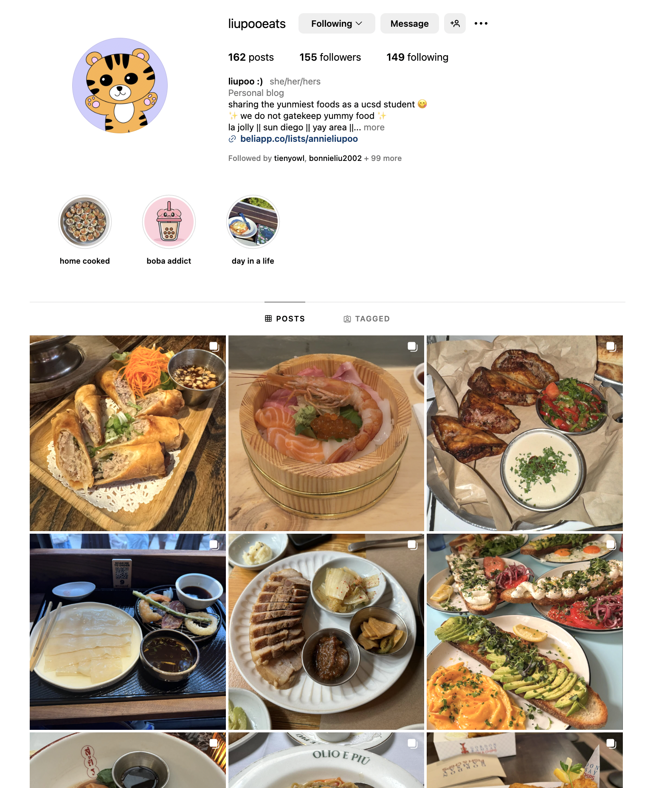

Passions
basketball

Up until college, basketball was the center of my life. My after-school schedule revolved around practice, while weekends were packed with tournaments, often in cities over 40 miles away.
Despite the long hours and challenges, I love the sport, and it has shaped much of who I am today. From dealing with injuries and overcoming game-deciding failures to learning teamwork, conflict resolution, time management, and perseverance, basketball built my grit and gave me lifelong memories and connections that I will always cherish.
“I've got a theory that if you give 100% all of the time, somehow things will work out in the end.” — Larry Bird
Now, I continue to play for the love of the game, to fuel my competitive spirit, stay healthy, and create more fun memories with friends.
Team on 3, Family on 6
High School Basketball Stats
| Season | Games Played | Total Points | Points Per Game |
|---|---|---|---|
| 2017-2018 (Freshman) | 27 | 143 | 5.3 |
| 2018-2019 (Sophomore) | 24 | 275 | 11.5 |
| 2019-2020 (Junior) | 24 | 398 | 16.6 |
| 2020-2021 (Senior) | 14 | 262 | 18.7 |
| Total Career Points | 1078 points | ||
food connoisseur
One of the most fun things I’ve picked up in college is exploring new foods. San Diego’s diverse food scene, from authentic tacos to the freshest poke plates, has made every outing an adventure. I love calling up friends to try something new and making each experience memorable. I even started a food Instagram and actively use Beli to keep track of the places I’ve visited and share my foodie finds with friends.
You can find my food socials below: